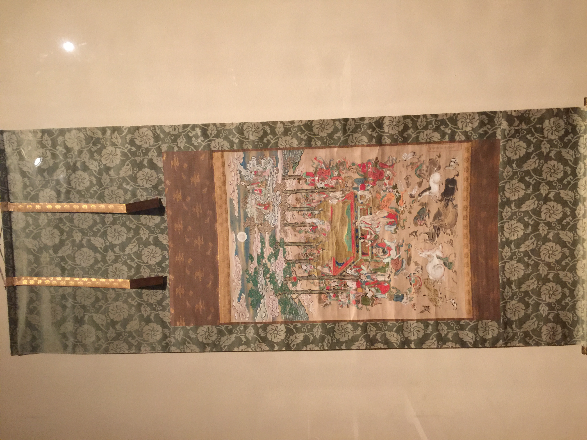
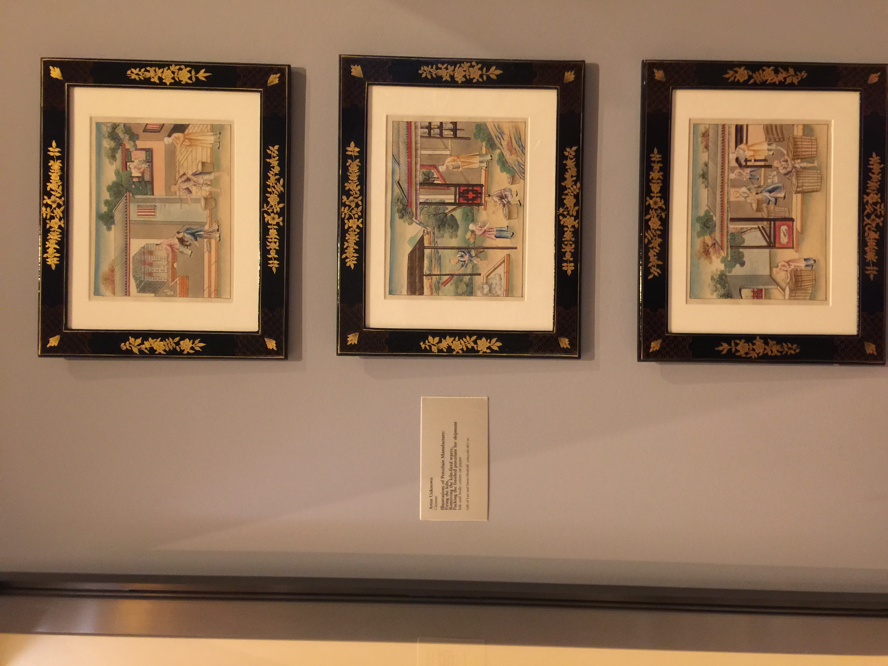
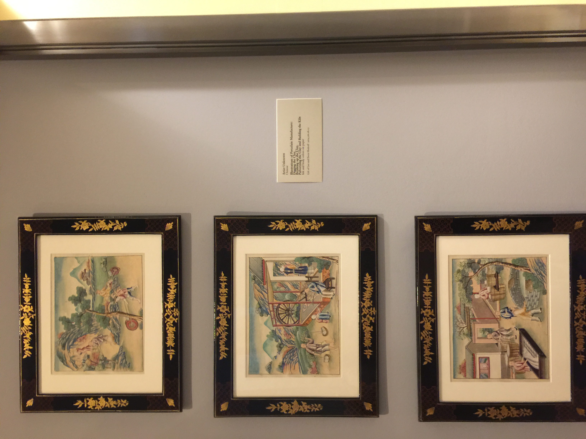

Paired Birds and Flowers

Early 20th Century, Korea
This eight-paneled folding screen shows both birds and flowers. The birds represent happiness and loyalty, and the flowers are simply to make it look better.
Paranirvana of Sakyamuni, the Historical Buddha
17th Century, Japan
This painting shows the death of Sakyamuni, the historical Buddha, in 438 BCE. The Indian prince is lying on his back, having just delivered his final teachings.
Illustrations of the Porcelain Manufacturing Process
Time Unknown, China
This set of six paintings show the steps of the porcelain manufacturing process in this order: Digging the clay, Breaking up the clay, Building the kiln, Firing the kiln, removing the kiln fired wares, packing the finished porcelain for shipping.